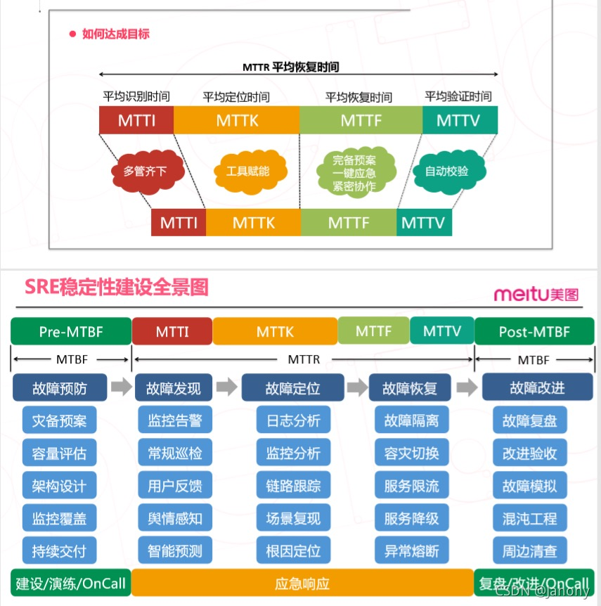

概述
- 本文旨在总结多年运维工作中，积累和沉淀下来的一些故障管理经验.
上线之前
- 新的项目上线之前，按照现有
上线检查工具，检查所有别的项目踩过的坑，避免掉入同类坑. - 按照故障演练系统出具的故障演练清单, 结合业务自身情况，对高频率故障进行演练. 例如
数据库主从切换、单机挂掉、单进程挂掉、被DDOS攻击, 形成项目的故障处理预案.
上线之后
平时
- 配合全链路监控系统，做好端到端监控，在故障发生时能够做到1、5、10（1分钟发现问题，5分钟定位问题，10分钟解决问题）
- 定期进行故障演练.
故障发生时
- 发生故障时, 第一时间通过故障预案,执行
故障快恢,使得业务快速恢复正常, 而不是去排查故障根因. - 更多细节
故障发生后
- 事后进行复盘，找出根因，由专门的故障横向小组跟进Action落地，除了
本产品/本业务线改进, 还要包括:- 同类问题
全业务线彻查，避免同类问题再次发生. - 持续迭代
上线检查工具.
- 同类问题
- 故障奖惩制度(红黑榜)，定期(比如每半年)统计故障次数最多(比如Top3)的业务线、责任人, 全公司通报批评，和绩效挂钩. 定期(比如每半年)统计故障次数最少(通常是0次)的业务线、SRE小组,全公司表扬奖励.
稳定性建设全景图

什么是 MTTR ?
MTTR 就是 Mean Time To Repair 的缩写，名为 平均修复时间，它是指修复系统并将其恢复到完整功能所需的时间量。
修复开始时，MTTR时钟开始滴答作响，直到恢复操作为止。这包括修复时间、测试时间和恢复正常工作状态所需要的时间周期。
1 如何计算 MTTR ?
要计算MTTR，就是将总维护时间除以给定时间段内维护操作的总数。
想象一下，一个水泵在一个工作日内出现三次故障。修复每一个故障所花的时间总共是一个小时。在这种情况下，MTTR 将为 1小时/3 = 20分钟。
需要注意的几点：
通常，每个失败实例的严重性都会有所不同。因此，虽然有些事故需要几天时间才能修复，但其他事故可能只需要几分钟就能修复。因此，MTTR给出了期望值的平均值。
为了获得可靠的结果，每次维修都必须由经过培训的合格人员进行，这些人员必须遵循明确的程序。 每一个高效的维护系统都需要研究如何尽可能地降低MTTR。这可以通过几种不同的方式来实现。 一种方法是通过跟踪备件和库存水平（从而在采购零件时节省停机时间）。
另一种方法是实施前瞻性维护策略，如预测性维护。预测性维护（PdM）将使您能够更好地监测在役设备的状况，并通过使用直接安装在容易发生故障的部件上的状态监测传感器更准确地预测潜在故障。 这些传感器可以提前提醒他们什么时候会发生故障。此时，修复不再是被动的，而是预测性的，因为经理有足够的时间安排执行作业所需的所有资源。
2 为什么 MTTR 有用？
花费太长时间来修复系统或设备是不可取的，因为它会对业务结果产生非常不愉快的影响。对于那些对失败特别敏感的服务来说，情况尤其如此。它常常导致生产环境停工、收入损失等等。
了解 MTTR 对于任何组织来说都是一个重要的工具，因为它告诉你如何有效地响应和修复生产中的问题。大多数组织都希望通过内部维护团队（由必要的资源、工具及软件支持）来降低 MTTR。